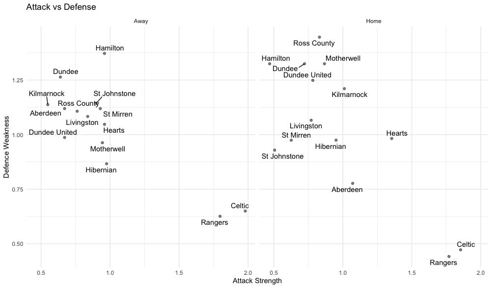

Projects


Football Analytics (January 2024 - May 2024)
Developed a football goal prediction model using **R**, leveraging the Poisson distribution to enhance the accuracy of predictions by **10-12%**. This model not only generated match odds predictions that closely align with those of major betting sites but also calculated the probability of home and away wins for teams through simulation methods. The insights provided by this model offered valuable data for strategic decision-making in football analytics.
View Project
User-Behavior eCommerce
This project utilizes the User-Behavior eCommerce dataset sourced from Kaggle, which captures user interactions on an online retail platform. The dataset includes various attributes, such as user IDs, product categories, timestamps, and actions taken, providing insights into customer purchasing behavior. This analysis aims to uncover patterns in user engagement and product performance, ultimately helping to inform strategies for improving sales and user experience.
View Project